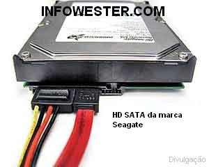

L'interface SATA est une évolution de l'IDE. La transmission des données se fait par un bus série et non parrallèle, ce qui explique les faibles dimensions des nappes de ces disques durs. Le débit maximum que peut atteindre cette interface est de 300 Mo par secondes pour le moment (contre 150 Mo/s pour la première version du SATA)
L'interface SATA marque un progrès notable par rapport à l'IDE, même si les performances à vitesse de rotation identique stagnent en raison d'une mécanique identique à celle des disques IDE pour la plupart des disques vendus.
Les avantages des disques durs SATA sont :
- 7 fils seulement permettent de communiquer avec un disque dur SATA (contre 80 pour les dernières nappes IDE). La principale raison à cela vient du fait que le SATA utilise un bus série au lieu de parallèle. Le câble est donc largement plus compact et permet de mieux faire circuler l'air dans le PC.
- Les disques durs peuvent désormais être branchés et débranchés à chaud (hot plug)
- Chaque disque est connecté sur un port SATA de la carte-mère, il n'y a donc plus de schéma maître/esclave à prendre en compte.
- Les anciens disques IDE peuvent être réutilisés en utilisant un adaptateur et êtres connectés via l'interface SATA.
Les inconvénients des disques durs SATA sont :
- Des cartes mères ne gérent pas le SATA en natif, il est nécessaire de mettre le pilote SATA du controleur de la carte mère sur disquette, CD ou clé usb.

Sur l'image ci dessus, A gauche c'est le câble d'alimentation du disque dur SATA et à droite le câble SATA relié de la carte mère jusqu'au disque dur.
Hard Drive Mechanic, site sur le fonctionnement des disques durs - Tous droits réservés. Copyright Mentions LégalesContactez Site Créé par Sébastien BUNEL